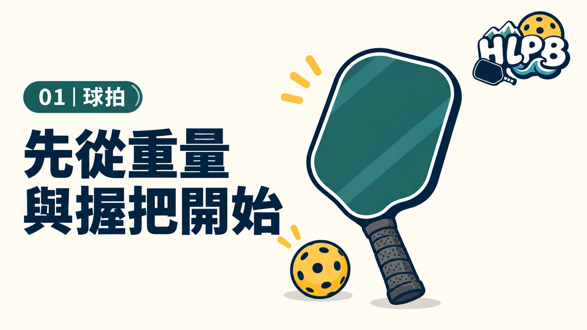
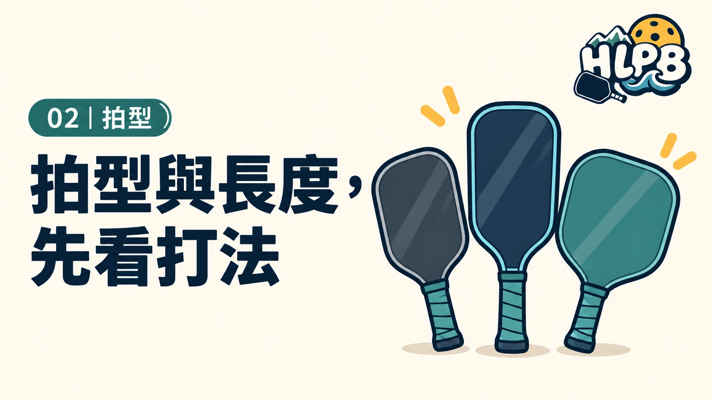
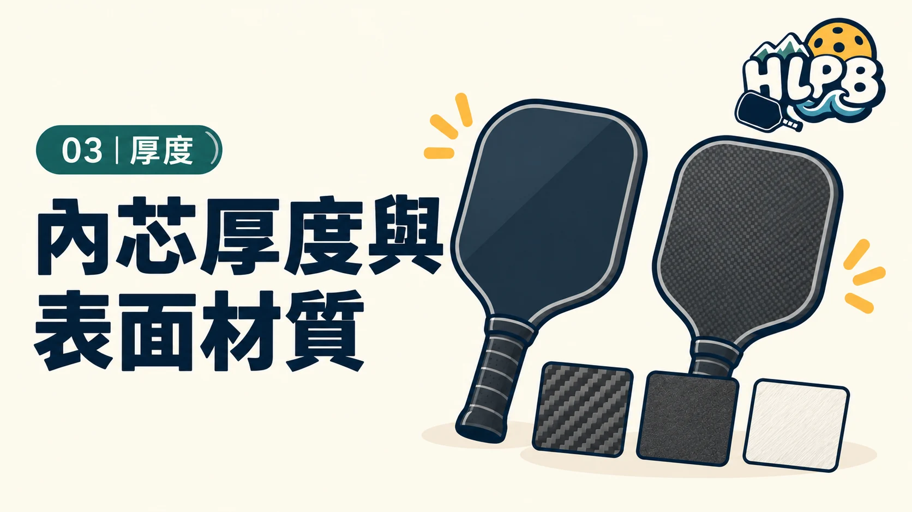
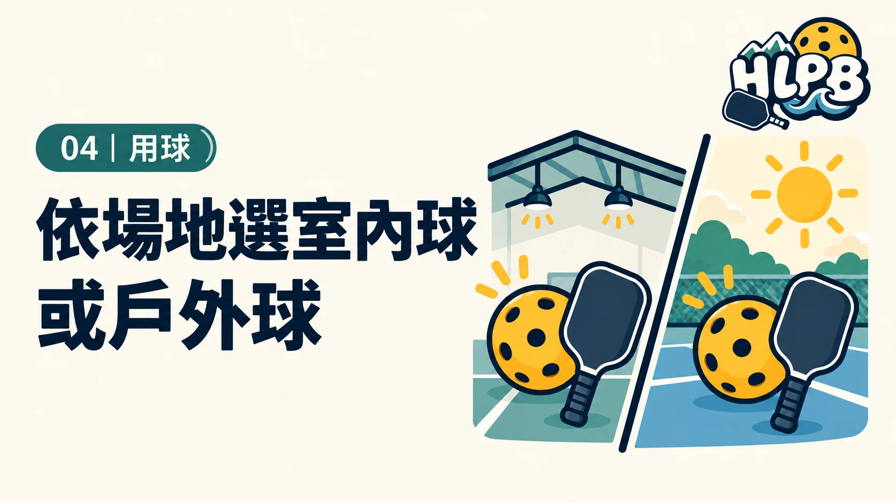
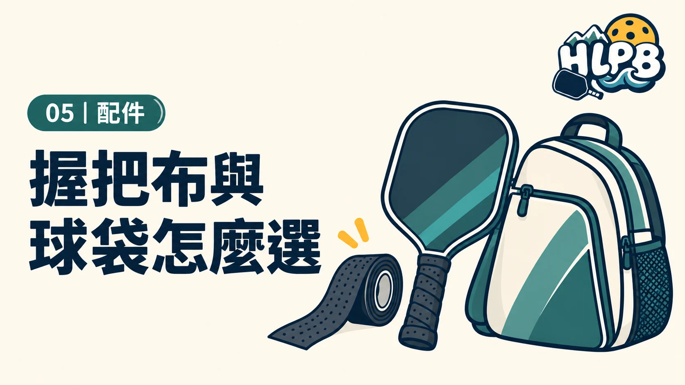

01｜球拍先從重量與握把開始
第一次買拍的人
確認整體重量、揮重、握把周長及握把長度，再考慮表面與內芯。
規格是參考，能實際試拍最好。
從重量、拍型、材質與使用需求開始選擇球拍和用品；沒有一支球拍適合所有人。

01｜球拍第一次買拍的人
確認整體重量、揮重、握把周長及握把長度，再考慮表面與內芯。
規格是參考，能實際試拍最好。

02｜拍型想比較不同球拍形狀的人
標準、加長與寬版的拍面比例不同。先看手感、拍面範圍和握柄長度，再選適合自己常用動作的拍型。
規格不代表一定比較好，試拍時留意揮拍是否順手。

03｜厚度想看懂 14 mm、16 mm 等規格的人
厚度、內芯結構與表面材質都會影響觸球感受。比起只看單一數字，更應比較整支球拍的重量與打起來的反應。
廠商標示方式不同，請以產品實際規格與試打感受為準。

04｜球開始自己準備用球的人
先確認場地是室內或戶外，再詢問球友常用球款。若參加比賽，優先依主辦單位指定用球準備。
先買少量試打，避免一次買太多不適用的球。

05｜配件已經固定打球、想整理裝備的人
握把布磨損或吸汗不佳時再更換；球袋依球拍、球和隨身物品的數量挑選容量。
先確認自己真正需要的收納空間與握感，不用一次買齊。